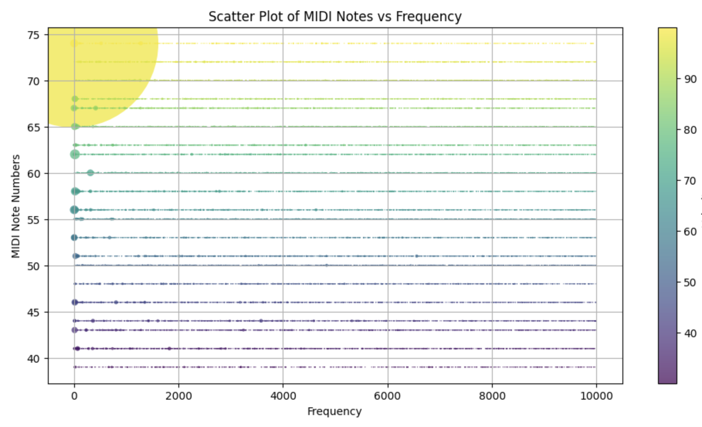
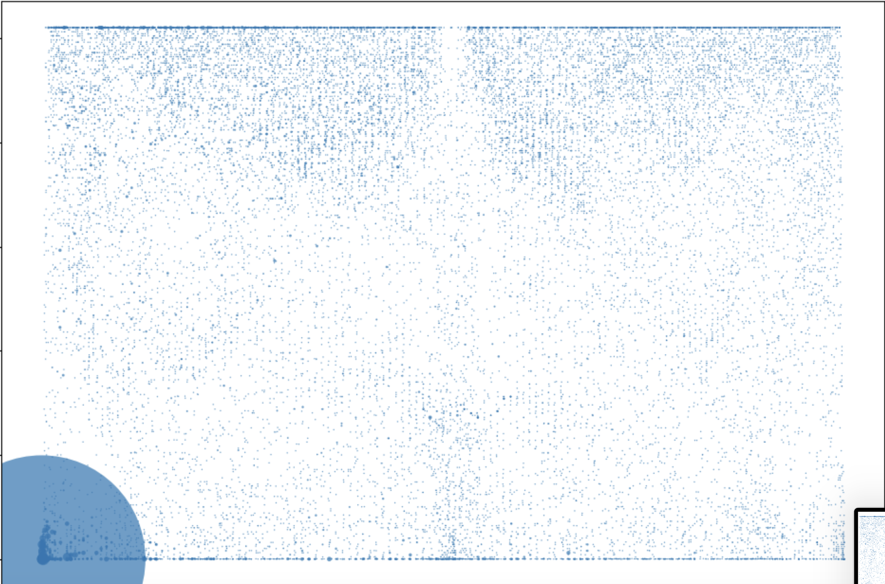
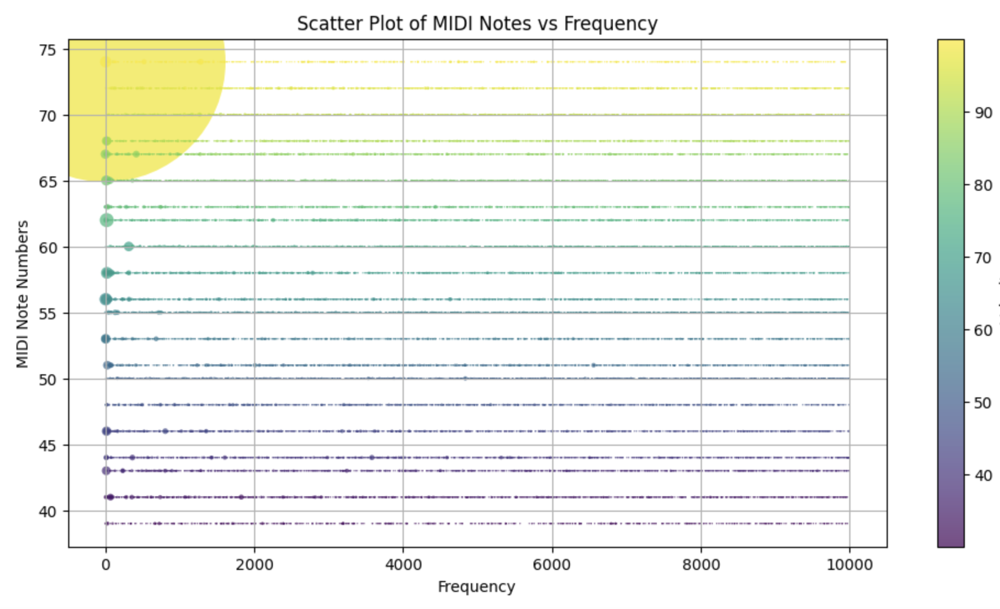
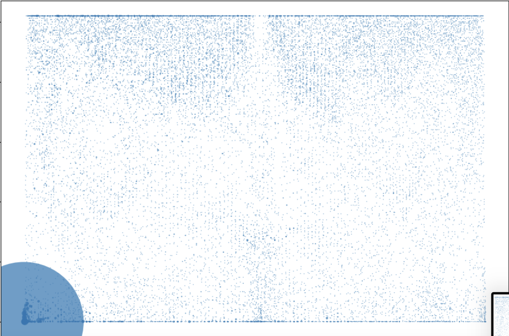

The Mind's Orchestra
 



Listen to the Composition
2024
This project transforms fMRI brain scans into a musical composition. Each brainwave is converted into MIDI notes, forming an abstract representation of cognitive processes through sound. The music generated is a direct reflection of neural activity patterns, creating an "orchestra" from the mind itself.
Project Details
The project was developed using Python and Jupyter Notebook. The fMRI was converted to a statistical representation based on coloring of the activity patterns. This work explores the intersection of neuroscience, technology, and art, aiming to create a tangible connection between brain function and creative expression.
Techniques & Tools
- Python for neuroimaging analysis
- MIDI conversion
- Sound design and music composition
Challenges
The primary challenge was ensuring that the musical notes generated were both accurate and aesthetically pleasing, despite the randomness of brainwaves. Another difficulty was refining the raw data from fMRI scans to make them compatible with musical frameworks.